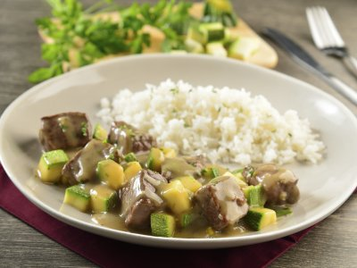

Salmon con Salsa de Vino y Hongos
Este rico salmón sellado esta acompañado de una salsa con hongos, vino, echalot y mantequilla.

Ingredientes
- 4 filetes de salmón (150 g cada uno)
- 400 gramos de hongo chanterelle
- 1/4 de taza de vino tinto
- 2 cucharadas de jerez
- 2 cucharadas de aceite de canola
- 3 cucharadas de mantequilla sin sal
- 2 cucharadas de echallot picado
- 2 cucharadas de estragón fresco picado
- 2 cucharadas de perejil fresco picado
- al gusto de pimienta al gusto
Preparación
- Pre caliente el horno a 200 grados centígrados.
- Limpie los hongos y córtelos en pedazos de 2cm.
- En un sartén a fuego medio derrita la mantequilla. Dore los echalots por 30 segundos y agregue los hongos, el estragón, el perejil y sazone con sal y pimienta. Cocine por 3 minutos.
- Agregue el vino, tape el sartén y reduzca el fuego a bajo y cocine por 10 minutos o hasta que los hongos estén tiernos. Destape el sartén y agregue el jerez. Hierva la mezcla por 1 minuto más.
- Sazone los filetes de salmón con sal y pimienta.
- Caliente el aceite en un sartén a fuego alto. Coloque los filetes de salmón con la piel hacia abajo y selle por 2 minutos. Pase el sartén al horno y cocine por 5-6 minutos más o hasta que el salmón este opaco cuando lo corte.
- Sirva los filetes en sus platos y agregue 3-4 cucharadas de la salsa de hongos sobre cada uno.
Carne de Res en Salsa Poblana y Calabacitas

La salsa de esta receta con carne de res es sorprendentemente deliciosa. Acompaña perfectamente el sabor del platillo con las calabacitas. Un auténtico manjar.
Ingredientes
- 3 cucharadas de aceite
- 1/2 pieza de cebolla finamente picada
- 1 diente de ajo finamente picado
- 2 tazas de calabaza cortada en cubitos
- 3 cucharadas de perejil
- 1 taza de agua
Preparación
- Calienta el aceite en una sartén a fuego medio, agrega la cebolla, el ajo y fríe por 2 minutos, sube el fuego y añade la carne continua la cocción por 3 minutos.
- Retira el exceso de grasa si es necesario, agrega la calabaza y cocina por 2 minutos.
- Vierte la crema de chile poblano más una lata de agua, baja el fuego y cuece por 10 minuto; agrega el perejil. Retira del fuego.
Tacos de Carne de Res Deshebrada con Salsa Picada Mexicana

¿Te sobró carne de res y no sabes qué hacer con ella? Prepara estos deliciosos tacos de carne deshebrada y deleita a toda tu familia a la hora de la comida, es muy fácil y económico de hacer. Acompáñalos con una salsa mexicana picada, será la mejor combinación.
Ingredientes
- 6 piezas de Tortillinas
- 200 gramos de carne de res deshebrada y cocida
- 3 piezas de jitomate guaje sin semilla, picado finamente
- 1/8 de pieza de cebolla finamente picada
- 3 piezas de chile serrano finamente picado
- 1 pieza de cilantro fresco solo las hojas
- 1 pieza de limon solo el jugo
- 3 pizcas de sal
- 2 pizcas de pimienta molida
Preparación
- Calienta las Tortillinas, y agrega la carne deshebrada de res.
- Mezcla el jitomate, cebolla, chile, jugo de limón y salpimienta.
- Agrega salsa a tu gusto y termina con hojas de cilantro.